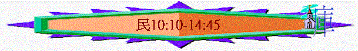

|
超越障礙、邁向豐盛（１－３６） |
|||||||||||||||||
|
預備起行 1-10:10 |
踏上征途10:11-14:45 |
曠野飄流 15-20:13 |
超越障礙 20:14-25:18 | 邁向豐盛 26-36 | |||||||||||||
|
組 織 |
生 活 |
基 礎 |
順 利 |
軟 弱 |
失 敗 |
教 育 |
叛 逆 |
定 例 |
管 教 |
環 境 |
軟 弱 |
咒 詛 |
引 誘 |
組 織 |
軍 令 |
回 顧 |
分 地 |
二.踏上征途（從西乃－－加低斯）
１０：１１－１４：４５
＊啟發問題：在1-10:10我們看神有週詳的組織與計劃，但當軟弱的人參予神的計劃時，會有甚麼後果？人能否落實之前步署的安排？
＊真理應用：從以色列人之失敗成為我們走天路的鑑戒
＊經文特色：不再停留西乃，是起行，少題「耶和華曉諭」
1.初段的順利【離開西乃】(10:11-36)
＊特點：沒太大難阻，很順利的前行，原因：
「第二年二月二十日，雲彩從法櫃的帳幕收上去。」10:11
A.人肯順服神
「以色列人就按站往前行，離開西乃的曠野，雲彩停住在巴蘭的曠野。這是他們照耶和華藉摩西所吩咐的，初次往前行。」10:12-13
〜順服雲彩帶領，神組織的安排，照神吩咐起行
B.人願倚靠神
「求你興起！願你的仇敵四散！願恨你的人從你面前逃跑！」10:35----倚靠神的工作
「求你回到以色列的千萬人中！」10:36----倚靠神的同在
2.瞬即的軟弱【往巴蘭曠野】(11-12)
＊特點：很快有軟弱，很快擴散，影響征途進度
A.眾百姓的怨言----他備拉(11:1-3)
a.旅途中埋怨
「眾百姓發怨言，他們的惡語達到耶和華的耳中。耶和華聽見了就怒氣發作，使火在他們中間焚燒，直燒到營的邊界。」11:1
〜沒講明埋怨的原因，可能因為旅途不適應及辛苦而埋怨
b.對神的不滿
〜另外怨言也反應對神的不滿，不滿意神的安排
c.嚴重的惡果
「百姓向摩西哀求，摩西祈求耶和華，火就熄了。那地方便叫做他備拉，因為耶和華的火燒在他們中間。」11:2-3
(1)神聽見
(2)神發怒
(3)火焚燒
B.閒雜人的貪慾----基博羅哈他瓦(11:4-35)
a.貪慾的危機
(1)閒雜人貪念的出現
「他們中間的閒雜人大起貪慾的心；以色列人又哭號說：「誰給我們肉吃呢？」11:4
「又有許多閒雜人，並有羊群牛群，和他們一同上去。」出12:38
〜可能不是選民，是那些與選民同行的外邦人，他們的心態未必是一心歸向神，或許只是趁熱鬧，或沒甚麼目標的跟隨。
(2)不滿足現有的恩典
〜他們起了貪慾，這貪慾反映了不滿足神賜的嗎哪，影響了其它選民也有此貪念
(3)厭棄今天賜恩的神
「要吃一個整月，甚至肉從你們鼻孔裡噴出來，使你們厭惡了，因為你們厭棄住在你們中間的耶和華，在他面前哭號說：我們為何出了埃及呢！」11:20
〜因慾念，更產生了厭棄，對施恩的神厭棄！
b.負面的影響
(1)
百姓的哭號
〜因一小撮閒雜人就影響百萬選民在神面前哭號
(2)
摩西的重壓
(A)厭棄托負
「摩西對耶和華說：「你為何苦待僕人？我為何不在你眼前蒙恩，竟把這管理百姓的重任加在我身上呢？」11:11
〜因著眾百姓的壓力，使到摩西的情緒出現，因而厭棄神的托負，為何把這管理的責任加在他身上！
(B)厭棄百姓
「這百姓豈是我懷的胎，豈是我生下來的呢？你竟對我說：『把他們抱在懷裡，如養育之父抱吃奶的孩子，直抱到你起誓應許給他們祖宗的地去。』」11:12
〜本來深愛同胞的摩西，也因壓力感覺這百姓不屬於他，和他沒？的！
(C)厭棄自己
「你這樣待我，我若在你眼前蒙恩，求你立時將我殺了，不叫我見自己的苦情。」11:15
〜甚至去到求死
(D)神的憐恤
(a)沒有責備
(b)深表認同
「我要在那裡降臨，與你說話，也要把降於你身上的靈分賜他們，他們就和你同當這管百姓的重任，免得你獨自擔當。」11:17
(c)實際支援
「又要對百姓說：『你們應當自潔，預備明天吃肉，因為你們哭號說：誰給我們肉吃！我們在埃及很好。這聲音達到了耶和華的耳中，所以他必給你們肉吃。」11:18
(d)給予信心
「耶和華對摩西說：「耶和華的膀臂豈是縮短了嗎？現在要看我的話向你應驗不應驗。」」11:23
c.嚴重的惡果
「有風從耶和華那裡颳起，把鵪鶉由海面颳來，飛散在營邊和營的四圍；這邊約有一天的路程，那邊約有一天的路程，離地面約有二肘。百姓起來，終日終夜，並次日一整天，捕取鵪鶉；至少的也取了十賀梅珥，為自己擺列在營的四圍。肉在他們牙齒之間尚未嚼爛，耶和華的怒氣就向他們發作，用最重的災殃擊殺了他們。那地方便叫做基博羅哈他瓦（就是貪慾之人的墳墓），因為他們在那裡葬埋那起貪慾之心的人。」11:31-34
C.同工的毀謗----哈洗錄(12)
a.至親的毀謗
(1)無理的毀謗
「摩西娶了古實女子為妻。米利暗和亞倫因他所娶的古實女子就毀謗他。」12:1
「摩西甘心和那人同住；那人把他的女兒西坡拉給摩西為妻。」出2:21
〜所娶的古實女子，可能是出埃及記所題的米甸女子，有文獻指出米甸等於古實，因當時律法仍未設立，而且此女子及她的父親也是認識神的，並且向神獻詩，米利暗和亞倫沒理由指責摩西的。
(2)嫉妒的主因
「說：「難道耶和華單與摩西說話，不也與我們說話嗎？」這話耶和華聽見了。」12:2
〜真正毀謗的原因是嫉妒，嫉妒摩西可以為領申袖，可以真接從神得誡命。
(3)不怕的表現
「我要與他面對面說話，乃是明說，不用謎語，並且他必見我的形像。你們毀謗我的僕人摩西，為何不懼怕呢？」12:8
〜因他們不怕攻擊神的僕人
b.摩西的反應
「（摩西為人極其謙和，勝過世上的眾人。）」12:3
〜摩西極其謙和，不計較，不反駁，不自辯(雖自己有理)
c.真神的回應
「耶和華在雲柱中降臨，站在會幕門口，召亞倫和米利暗，二人就出來了。耶和華說：「你們且聽我的話：你們中間若有先知，我耶和華必在異象中向他顯現，在夢中與他說話。我的僕人摩西不是這樣；他是在我全家盡忠的。我要與他面對面說話，乃是明說，不用謎語，並且他必見我的形像。你們毀謗我的僕人摩西，為何不懼怕呢？」耶和華就向他們二人發怒而去。雲彩從會幕上挪開了，不料，米利暗長了大痲瘋，有雪那樣白。亞倫一看米利暗長了大痲瘋。」12:5-10
(1)對被毀謗者
〜神會維護，並且在攻擊者前讚賞摩西的忠心，神是特別與他同在的。
(2)對攻擊者
〜神會發怒，令米利暗長大麻瘋
3.至終的失敗【加低斯】(13-14)
「耶和華曉諭摩西說：「你打發人去窺探我所賜給以色列人的迦南地，他們每支派中要打發一個人，都要作首領的。」」13:1-2
「你們都就近我來說：『我們要先打發人去，為我們窺探那地，將我們上去該走何道，必進何城，都回報我們。』這話我以為美，就從你們中間選了十二個人，每支派一人。」申1:22-23
探地起因：不是了解應不應該入迦南，而是預了入迦南，探地只是為看如何入迦南，走那條路及看一看迦南地的豐富。
A.十探子的失敗
「但那些和他同去的人說：「我們不能上去攻擊那民，因為他們比我們強壯。」探子中有人論到所窺探之地，向以色列人報惡信，說：「我們所窺探、經過之地是吞吃居民之地，我們在那裡所看見的人民都身量高大。我們在那裡看見亞衲族人，就是偉人；他們是偉人的後裔。據我們看，自己就如蚱蜢一樣；據他們看，我們也是如此。」」13:31-33
a.誇大難處
〜探子的角式是將真實事情報告出來，他們將亞衲族人誇大為偉人，他們看選民如同蚱蜢。
b.越過職權
〜探子只是探路，不是決定去不去！
c.令羊退後
「我們上那裡去呢？我們的弟兄使我們的心消化，說那地的民比我們又大又高，城邑又廣大又堅固，高得頂天，並且我們在那裡看見亞衲族的人。』」申1:28
〜作為帶領應帶領羊群行上信心之路，但十個探子的話卻令弟兄的心消化！
B.全會眾的失敗
a.不信
「當下，全會眾大聲喧嚷；那夜百姓都哭號。以色列眾人向摩西、亞倫發怨言；全會眾對他們說：「巴不得我們早死在埃及地，或是死在這曠野。」」14:1-2
(1)每日經歷神恩典仍不信
「耶和華對摩西說：「這百姓藐視我要到幾時呢？我在他們中間行了這一切神蹟，他們還不信我要到幾時呢？」14:11
〜他們每天見到雲彩、火柱，見過神蹟恩典仍不信！
(2)曾經看見神大能仍懼怕
「這些人雖看見我的榮耀和我在埃及與曠野所行的神蹟，仍然試探我這十次，不聽從我的話。」14:22
b.悖逆
(1)違背神命令
「眾人彼此說：「我們不如立一個首領回埃及去吧！」」14:4
「摩西將這些話告訴以色列眾人，他們就甚悲哀。清早起來，上山頂去，說：「我們在這裡，我們有罪了；情願上耶和華所應許的地方去。」摩西說：「你們為何違背耶和華的命令呢？這事不能順利了。不要上去；因為耶和華不在你們中間，恐怕你們被仇敵殺敗了。亞瑪力人和迦南人都在你們面前，你們必倒在刀下；因你們退回不跟從耶和華，所以他必不與你們同在。」他們卻擅敢上山頂去，然而耶和華的約櫃和摩西沒有出營。」14:39-44
〜神要他們去，他們卻不去，後來神要他們不去，他們卻要去，反映他們悖逆的特質
(2)背叛敵擋神
「眾人彼此說：「我們不如立一個首領回埃及去吧！」」14:4
〜想另立一個首領，並想殺迦勒、約書亞，充份表露他們背叛敵擋神的真貌！
c.淫行
(1)回埃及路
「你們的兒女必在曠野飄流四十年，擔當你們淫行的罪，直到你們的屍首在曠野消滅。」14:33
〜聖經強調他們的淫行，回埃及的路，就是背棄與神的盟約，走回頭之路，如犯姦淫不忠的罪一樣！
(2)不跟從神
「亞瑪力人和迦南人都在你們面前，你們必倒在刀下；因你們退回不跟從耶和華，所以他必不與你們同在。」14:43
C.嚴重的惡果
a.奪回應許
「亞瑪力人和迦南人住在谷中，明天你們要轉回，從紅海的路往曠野去。」14:25
「必不得進我起誓應許叫你們住的那地；惟有耶孚尼的兒子迦勒和嫩的兒子約書亞才能進去。但你們的婦人孩子，就是你們所說、要被擄掠的，我必把他們領進去，他們就得知你們所厭棄的那地。至於你們，你們的屍首必倒在這曠野；你們的兒女必在曠野飄流四十年，擔當你們淫行的罪，直到你們的屍首在曠野消滅。按你們窺探那地的四十日，一年頂一日，你們要擔當罪孽四十年，就知道我與你們疏遠了，」14:30-34
〜二十歲以外發怨言的男丁(代表家庭之主)不能進應許地，要至死在曠野中！
b.收回關係
「按你們窺探那地的四十日，一年頂一日，你們要擔當罪孽四十年，就知道我與你們疏遠了，」14:34
〜神更要與他們疏離，神人親密的關係遭收回！
c.奪取性命
「摩西所打發、窺探那地的人回來，報那地的惡信，叫全會眾向摩西發怨言，這些報惡信的人都遭瘟疫，死在耶和華面前。」14:36-37